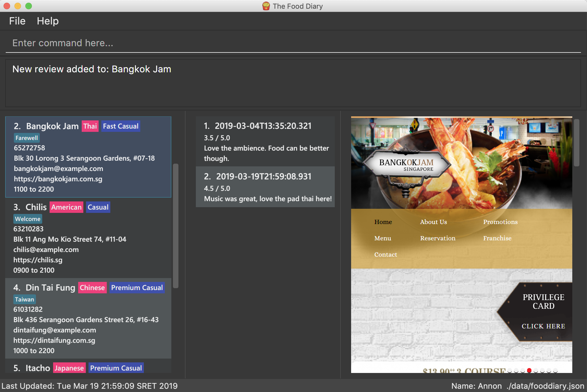

By: W17-1 Since: Feb 2019 Licence: MIT
- 1. Introduction
- 2. Quick Start
- 3. Features
- 3.1. Viewing help :
help - 3.2. Adding a review:
addReview - 3.3. Editing a specified review :
editReview - 3.4. Deleting a review :
deleteReview - 3.5. Add a picture of the food to a review :
addImage - 3.6. Listing all reviews :
listReviews - 3.7. Adding a restaurant:
add - 3.8. Deleting a restaurant:
delete - 3.9. Listing all restaurants :
list - 3.10. Listing all restaurants not tried before :
listUnvisited - 3.11. Editing details of a restaurant :
edit - 3.12. Setting the category of a restaurant :
setCategory - 3.13. Filter restaurants based on category :
filter - 3.14. Personalising your food diary with your name:
name - 3.15. View your profile and usage statistics :
view - 3.16. Display website of selected restaurant :
visitWeb - 3.17. Exiting the program :
exit - 3.18. Saving the data
- 3.1. Viewing help :
- 4. FAQ
- 5. Command Summary
1. Introduction
The Food Diary (FD) is for those who prefer to use a desktop app for storing their personal food reviews and obtain food recommendations. More importantly, FD is optimized for those who prefer to work with a Command Line Interface (CLI) while still having the benefits of a Graphical User Interface (GUI). If you can type fast, FD can get your foodie tasks done faster than traditional GUI apps.
Some of the features that can look forward to:
-
Keeping track of restaurants you’ve visited
-
Getting an aggregate rating over all your visits
-
Finding out about new restaurants near you for your next gastronomical adventure!
Interested? Jump to the Section 2, “Quick Start” to get started. Enjoy!
2. Quick Start
-
Ensure you have Java version
9or later installed in your Computer. -
Download the latest
fooddiary.jarhere. -
Copy the file to the folder you want to use as the home folder for your Food Diary.
-
Double-click the file to start the app. The GUI should appear in a few seconds.
 -
Type the command in the command box and press Enter to execute it.
e.g. typinghelpand pressing Enter will open the help window. -
Some example commands you can try:
-
listRestaurants: lists all restaurants -
addReviewn/MCDONALDS r/4 m/delicious: adds a review to MCDONALDS with rating 4 with the comment "delicious" -
delete3: deletes the 3rd review shown in the index -
exit: exits the app
-
-
Refer to Section 3, “Features” for details of each command.
3. Features
Command Format
-
Words in
UPPER_CASEare the parameters to be supplied by the user e.g. inadd n/RESTAURANT_NAME,RESTAURANT_NAMEis a parameter which can be used asadd n/Burger King. -
Items in square brackets are optional.
-
Items with
… after them can be used multiple times including zero times e.g.[t/TAG]…can be used ast/friend,t/friend t/familyetc. -
Parameters can be in any order e.g. if the command specifies
n/RESTAURANT_NAME r/STAR_RATING,r/STAR_RATING n/RESTAURANT_NAMEis also acceptable.
3.1. Viewing help : help
Format: help
3.2. Adding a review: addReview
Adds a review to the Food Diary
Format: addReview INDEX re/ENTRY rr/RATING
Examples:
-
addReview 2 re/Peach Pie was amazing rr/4
3.3. Editing a specified review : editReview
Edit selected fields in a specified entry.
Format: editReview INDEX [re/ENTRY] [rr/RATING]
Examples:
-
edit 1 rr/3
Edits the rating of the 1st review to be 3. -
edit 2 re/Food isn’t the best
Edits the comment of the second review to "Food isn’t the best"
3.4. Deleting a review : deleteReview
Deletes the review from the Food Diary.
Format: deleteReview INDEX
Examples:
-
deleteReview 2
Deletes the 2nd review of the selected Restaurant in the Food Diary.
3.5. Add a picture of the food to a review : addImage
Adds a picture of the food to the review in the specified entry
Format: addImage INDEX [f/FOOD_NAME] i/IMAGE_FILEPATH
Examples:
-
addImage 2 f/apple pie i/apple.jpg
Adds a picture to the second review of an apple pie
3.6. Listing all reviews : listReviews
Shows a list of all reviews in the Food Diary.
Format: listReviews [n/RESTAURANT_NAME]
Examples:
-
listReviews
Return all the reviews -
listReviews n/MACDONALDS
Return all the reviews for Macdonalds.
3.7. Adding a restaurant: add
Add a restaurant that is not found in the current list of restaurants.
Format: add n/RESTAURANT_NAME a/ADDRESS c/CUISINE
Examples:
-
add n/Nana Thai food a/561 Clementi Road c/Thai
adds the restaurant Nana Thai food with address 561 Clementi Road and cuisine Thai food to the list
3.8. Deleting a restaurant: delete
Delete a restaurant that is in the current list of restaurants.
Format: delete INDEX
Examples:
-
delete 1
Deletes the 1st restaurant in the Food Diary.
3.9. Listing all restaurants : list
Shows a list of all restaurants in the Food Diary with an option to filter for certain property.
Format: list [n/RESTAURANT_NAME] [a/ADDRESS] [c/CUISINE]
Examples:
-
list
Return all the restaurants
3.10. Listing all restaurants not tried before : listUnvisited
List the restaurants in the database that have no reviews.
Format: listUnvisited
Examples:
-
listUnvisited
Return all the restaurants that you have not visited
3.11. Editing details of a restaurant : edit
Edit the details of a restaurant identified by the index number used in the listRestaurants.
Format: edit INDEX [n/RESTAURANT_NAME] [a/ADDRESS] [c/CUISINE]
Examples:
-
listRestaurants
`editRestaurant 2 n/MACS `
Change the name of the second restaurant in the list to MACS.
3.12. Setting the category of a restaurant : setCategory
Set the cuisine of a restaurant identified by the index number used in the listRestaurants.
Format: setCategory INDEX [c/CUISINE] [o/OCCASION] [p/PRICE_RANGE]
Examples:
-
listRestaurants
setCategory 2 c/Fine Dining o/Wedding p/expensive
Set the categories of the second restaurant in the list toFind Diningfor cuisine,Weddingfor occasion andexpensivefor price range.
Note:
-
setCategory for
CuisineandOccasionsupported as of v1.2 -
Price rangesupport coming in v1.3 -
Autocomplete feature planned for v1.4
3.13. Filter restaurants based on category : filter
Filters and lists the restaurants with categories matching the keywords entered.
Format: filter KEYWORD [MORE_KEYWORDS]
Examples:
-
filter fast food
Returns restaurants with cuisine or occasion matchingfast food -
filter fast food gatheringReturns restaurants with cuisine or occasion matching fast food gathering
Note:
-
Filter support for
Price rangecoming in v1.3
3.14. Personalising your food diary with your name: name
Personalise your foodDiary with your name
Format: name n/YourName
Examples:
-
name n/JackTheSheep
3.15. View your profile and usage statistics : view
Set the cuisine of a restaurant identified by the index number used in the listRestaurants.
Format: view
Examples:
view
View personalised statistics for IAMAwesome. You have a total of 0 reviews and a total of 1 restaurants.
3.16. Display website of selected restaurant : visitWeb
Display the website of a restaurant identified by the index number used in the listRestaurants based on its weblink.
Format: visitWeb INDEX
Examples:
-
list
visitWeb 1
Displays webpage of Restaurant at index 1 of list.
3.17. Exiting the program : exit
Exits the program.
Format: exit
3.18. Saving the data
Food diary data are saved in the hard disk automatically after any command that changes the data.
There is no need to save manually.
4. FAQ
Q: How do I transfer my data to another Computer?
A: Install the app in the other computer and overwrite the empty data file it creates with the file that contains the data of your previous Food Diary folder.
5. Command Summary
Restaurant Class
-
add :
add n/RESTAURANT_NAME a/ADDRESS c/CUISINE
e.g.add n/Nana Thai food a/561 Clementi Road c/Thai -
edit :
edit INDEX [n/RESTAURANT_NAME] [a/ADDRESS] [c/CUISINE]
e.g.listRestaurants
editRestaurant 2 n/MACS -
delete :
delete INDEX
e.g.delete 1 -
list :
list [n/RESTAURANT_NAME] [a/ADDRESS] [c/CUISINE]
e.g.list n/MacDonalds -
listUnvisited :
listUnvisited
e.g.listUnvisited -
setCategory :
setCategory INDEX [c/CUISINE] [o/OCCASION] [p/PRICE_RANGE]
e.g.listRestaurants
setCategory 2 c/Fine Dining o/Wedding p/expensive -
filter :
filter KEYWORD [MORE_KEYWORDS]
e.g.filter fast food gathering -
visitWeb :
visitWeb INDEX
e.g.list
visitWeb 1
Review Class
-
addReview :
addReview INDEX re/ENTRY rr/RATING
e.g.addReview 2 re/Peach Pie was amazing rr/4 -
editReview :
edit INDEX [r/STAR_RATING] [m/COMMENT]
e.g.edit 2 rr/Food isn’t the best -
deleteReview :
deleteReview INDEX_RESTAURANT INDEX_REVIEW
e.g.delete 3 1
FoodDiary Class
-
name :
name n/YourName
e.g.name n/JackTheSheep -
view :
view
e.g.view
Miscellaneous
-
help :
help -
exit :
exit